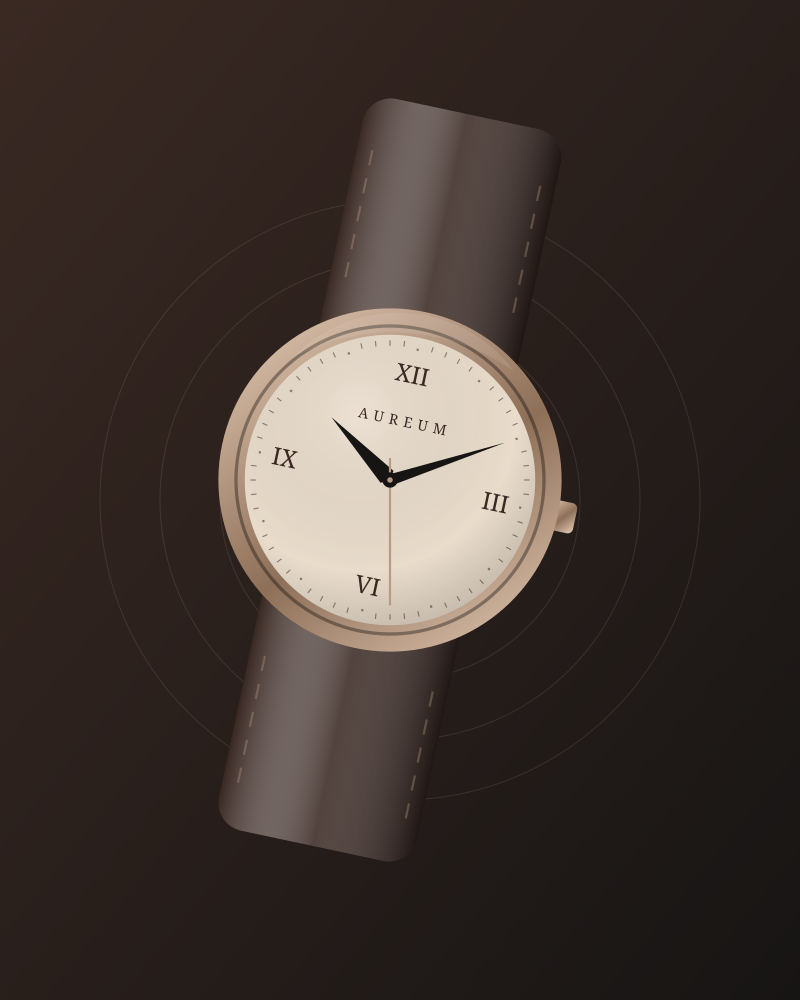
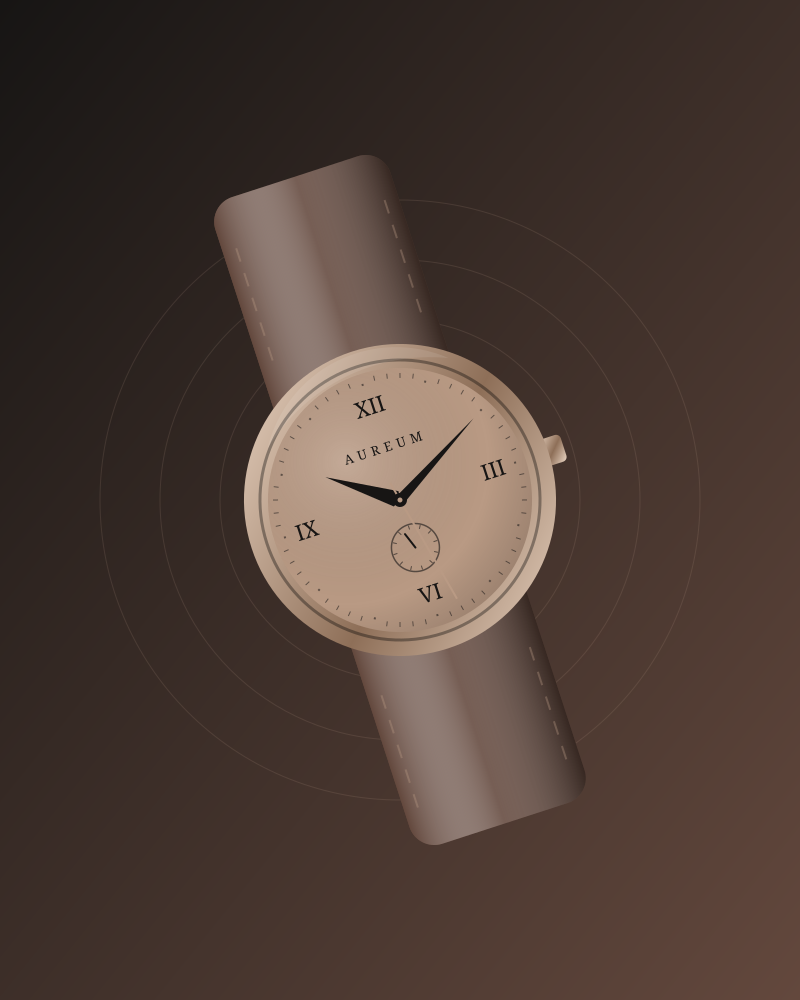

Material
Rose-gold steel, sapphire crystal and vegetable-tanned leather, chosen for how they age as much as how they look.
A small atelier with a long view. We make fewer watches, and make each one count.

Aureum began in 1987 with one watchmaker, one bench and a stubborn idea: that a watch should earn its place on the wrist through quiet excellence, not noise.
Today fourteen master watchmakers carry that idea forward. Each watch is still assembled, regulated and signed by a single pair of hands, then finished in the warm metals and deep leathers that define our house.
Rose-gold steel, sapphire crystal and vegetable-tanned leather, chosen for how they age as much as how they look.
Every calibre is regulated over fourteen days in six positions before it ever meets a case.
Brushed, polished and bevelled by hand. Slight differences between watches are signatures, not flaws.
“A watch is the only luxury that works for you every second of the day.”Founder, Aureum Horologie

From early meetings to late dinners, an Aureum is designed to feel as right at midnight as it does at midday. Warm tones that flatter the wrist, proportions that disappear under a cuff, and straps that soften with every year.
Shop the collectionTo craft watches with honest materials and visible care, so that every owner has something worth keeping, repairing and passing on.
To be the independent maison people trust to still be here, and still be making watches properly, when their grandchildren come to service them.
Questions about sizing, servicing or a special commission? Our concierge team replies within one working day.